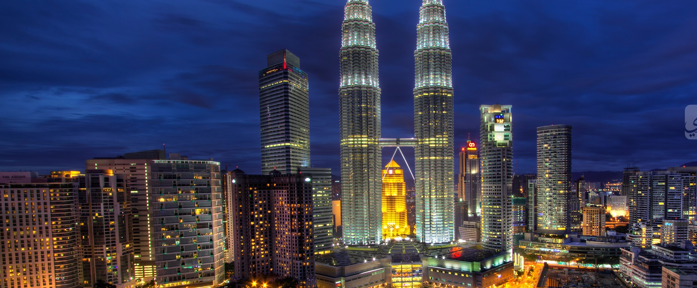
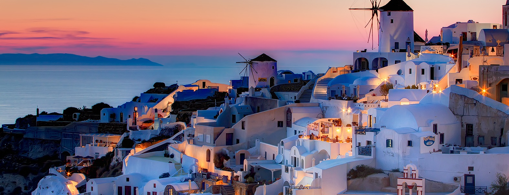
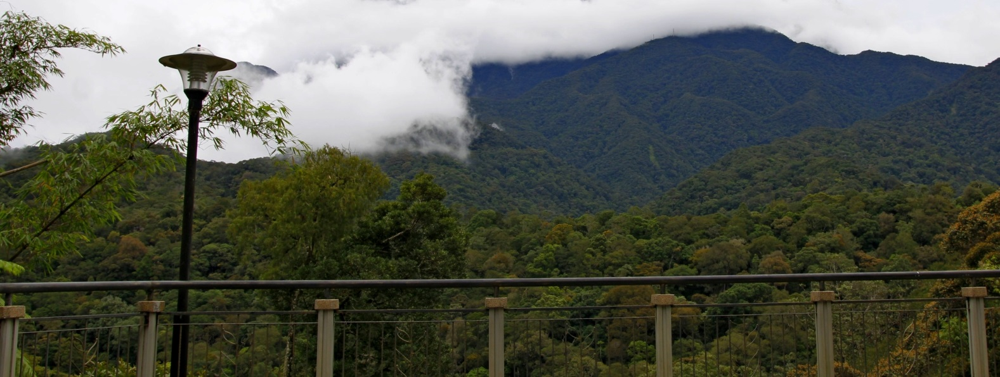

Petronas Twin Towers

The Petronas Twin Towers in Kuala Lumpur were the world’s tallest buildings
before being surpassed in 2004 by Taipei 101.
However, the towers are still the tallest twin buildings in the world.
The 88-floor towers are constructed largely of reinforced concrete,
with a steel and glass facade designed to resemble motifs found in Islamic art,
a reflection of Malaysia’s Muslim religion.
The Petronas Twin Towers feature a sky bridge between the two towers on the 41st and 42nd floors..
Perhentian Islands

The Perhentian Islands are a small group of beautiful,
coral-fringed islands off the coast of northeastern Malaysia, not far from the Thai border.
The two main islands are Perhentian Besar (“Big Perhentian”) and Perhentian Kecil (“Small Perhentian”).
Kecil attracts more travellers as it has cheaper accommodation,
while Besar is a little more expensive and caters more to families
and those who want to avoid the backpacker party scene..
Mount Kinabalu .

With a summit height at 4,095 meters (13,435 ft),
Mount Kinabalu is the highest mountain in Borneo.
The mountain is known worldwide for its tremendous botanical and biological species biodiversity.
Over 600 species of ferns, 326 species of birds, and 100 mammalian species
have been identified at Mount Kinabalu and its surrounding.
The main peak of the mountain can be climbed easily by a person with a good physical condition,
and requires no mountaineering equipment although climbers must be accompanied by guides at all times...